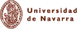

© 2000-2019 Fundación Tomás de Aquino
Iura omnia asservantur
L.D.V.Q.M.
| CORPUS THOMISTICUM | |
|---|---|
| Subsidia studii ab Enrique Alarcón collecta et edita | |
| Pompaelone ad Universitatis Studiorum Navarrensis aedes ab A.D. MM | |
| BREVIS INTRODUCTIO | |
| Opera omnia S. Thomae | Automata Androidica |
| Bibliographia Thomistica | Chartae synopticae operum |
| Editio Leonina | Abbreviationes |
| Editiones operum optimae | De operibus authenticis |
| Index Thomisticus | Tabula Aurea |
| Thomas-Lexikon | Lexicon of Thomas Aquinas |
| Fontes vitae Thomae | Catalogi operum antiqui |
| De Thomae auctoritate | Salmanticenses ad PRDL |
| Inventarium huius loci | Nexus interretiales |
| MUNIFICE SUBVENIUNT | ||||
|---|---|---|---|---|
|  | ||||
© 2000-2019 Fundación Tomás de Aquino Iura omnia asservantur L.D.V.Q.M. |
||||